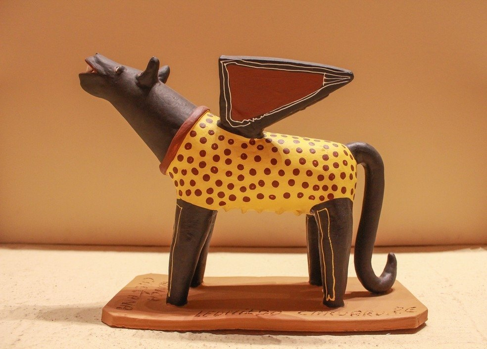
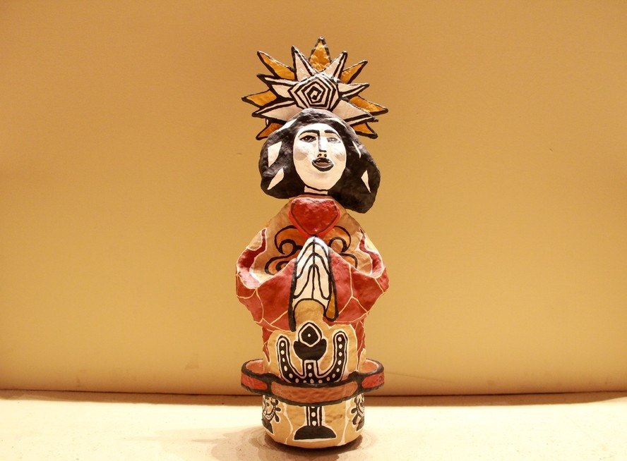
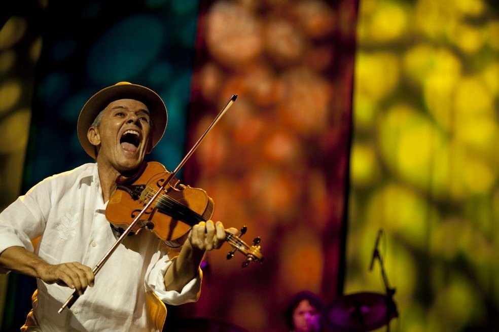

Movimento Armorial
Quando o popular e o erudito se encontram em linguagem brasileira.
O Movimento Armorial não é um artesão individual, mas um projeto estético criado em Pernambuco para aproximar arte erudita e raízes populares do Nordeste brasileiro.
O Movimento Armorial foi lançado oficialmente no Recife, em 18 de outubro de 1970, sob liderança de Ariano Suassuna, então professor ligado à Universidade Federal de Pernambuco. O lançamento reuniu concerto e exposição de artes plásticas, marcando a ideia de uma arte brasileira erudita construída a partir da cultura popular.
A proposta armorial olha para o cordel, a xilogravura, a música de rabeca, viola e pífano, a religiosidade popular, os bichos fantásticos, os brasões sertanejos, o teatro e os espetáculos de rua. Em vez de tratar esses elementos como folclore distante, o movimento os coloca no centro de uma linguagem sofisticada e brasileira.
Nas artes visuais, a estética armorial aparece em gravuras, pinturas, esculturas, cerâmicas, tapeçarias e objetos. Gilvan Samico, Francisco Brennand, J. Borges, Fernando Lopes, Aluísio Braga e muitos outros artistas ajudam a mostrar como o popular e o erudito podem conversar sem perder a força do território.
A Fenearte também dialogou diretamente com o Armorial. Em 2021, a 21ª edição da feira teve o tema “É Festa no Reino da Arte”, em homenagem ao movimento e a Ariano Suassuna, usando símbolos, figuras iconográficas e elementos visuais ligados à estética armorial.
Hoje, o Armorial segue vivo como referência para artesãos e artistas contemporâneos. Peças em barro, papel, madeira, gravura e pintura retomam animais míticos, figuras solares, santos, cavaleiros, onças e emblemas do sertão como linguagem de pertencimento.
O sertão virou brasão, música, gravura e escultura.
Galeria de peças e referências visuais
Veja registros visuais já disponíveis e, quando houver, o Instagram oficial para acompanhar peças, ateliê e bastidores.



Para observar na peça
- Elementos de cordel, xilogravura e romanceiro popular
- Animais simbólicos: onças, cavalos, aves e bichos fantásticos
- Composição frontal, heráldica, solar ou em forma de emblema
- Cores quentes, contrastes e aparência de brasão sertanejo
- Diálogo entre artesanato, arte popular e linguagem erudita
Materiais e técnica
Fontes e créditos
- Jornal da Paraíba — O que é Movimento Armorial, criado por Ariano Suassuna https://jornaldaparaiba.com.br/cultura/o-que-e-movimento-armorial-criado-por-ariano-suassuna
- Portal Cultura PE — Fenearte homenageia o Movimento Armorial https://www.cultura.pe.gov.br/maior-feira-de-artesanato-do-estado-fenearte-comeca-nesta-sexta-feira-10-no-cecon/
- Revista Continente — Fenearte 2021 homenageia o Movimento Armorial https://revistacontinente.com.br/secoes/indicacoes/-arte-popular--fenearte-2021
- Casa e Jardim — Movimento armorial é herança do Nordeste e memória artística brasileira https://revistacasaejardim.globo.com/arte/noticia/2024/07/movimento-armorial-e-heranca-do-nordeste-e-memoria-artistica-brasileira.ghtml
- UFPE — Exposição Movimento Armorial 50 anos conta com 14 obras da UFPE https://www.ufpe.br/ascom/noticias/-/asset_publisher/O3Odar12gQTr/content/exposicao-movimento-armorial-50-anos-conta-com-14-obras-da-ufpe/40615
- ADEPE — 21ª Fenearte ganha nova data https://www.adepe.pe.gov.br/21a-fenearte-ganha-nova-data/